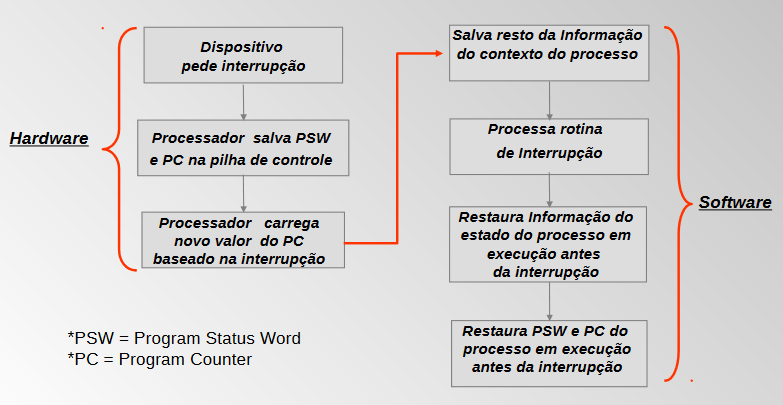
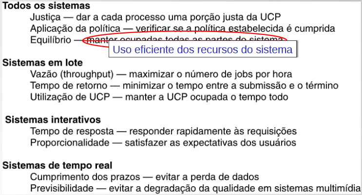

🤓 RESUMO: Escalonamento 💻
Tipos de processos, interrupção, preempção e multiprogramação
Modelo de multiprogramação
- Multiprogramação de quatro programas
- Modelo conceitual de 4 processos sequenciais, independentes
- Somente um programa está ativo a cada momento
Tipos de S.O.
- Monotarefa
- Multitarefa
- Monousuário
- Multiusuário
Como evitar que um processo monopolize o sistema?
Compartilhamento de tempo:
- Permite sistemas interativos (entrada/saída)
- Requer temporizadores (timers)
- Interrupções
Multiprogramação
- O índice de processos contém o apontador para a lista de processos.
- PC (Program Counter) = contador de programas
- Uma troca de processos consiste em trocar o valor dos registradores de contexto da CPU
Requisitos para multiprogramação
Suporte do hardware
- temporizadores
- interrupções
- proteção de memória
Suporte do S.O.
- Escalonamento dos processos
- Alocação de memória
- Gerenciamento dos periféricos
Comportamentos de processos
Surtos de uso da CPU alternam-se com períodos de espera por E/S
- processo limitado por CPU
- processo limitado por E/S
Tipos de processo
Batch (lote) x Interativos
CPU-bound
- gasta a maior parte do seu tempo usando a CPU
- longos tempos de execução e baixo volume de comunicação entre processos. ex: aplicações científicas, engenharia e outras aplicações que demandam alto desempenho de computação.
I/O-bound:
- passa a maior parte do tempo esperando por dispositivos de E/S.
A importância das interrupções
Num sistema simples, CPU deve esperar a execução do comando de E/S.
Um sistema com interrupção não fica esperando.
A CPU solicita a operação de E/S e fica executando outras tarefas até ser interrompida pelo disco.
Operação Básica da CPU

Processo de interrupção
Algoritmos de Escalonamento
Escalonamento de processos
- Quando um ou mais processos estão prontos para ser executados, o SO decide qual executar primeiro
- A parte do sistema operacional responsável por essa decisão é chamada escalonador
- O algoritmo usado para tal é chamado de algoritmo de escalonamento
Abstração
Uma máquina para cada processo => paralelismo real
Multiprogramação
Compartilhamento de tempo => pseudo-paralelismo
Filas de escalonamento
High-level (Long-Term)
- Decide quantos programas são admitidos no sistema (i.e., grau de multiprogramação)
- Aloca memória e cria um processo
Short-term
- Decide qual processo deve ser executado (processos no estado de pronto)
I/O
- Decide qual processo (com I/O) pendente deve ser tratado pelo dispositivo de I/O
Categorias de algoritmos de escalonamento
- Em lote (batch)
- Interativo
- Tempo-real
Objetivos dos algoritmos de escalonamento
Características de escalonamento
- Justiça (fairness): Todos os processos têm chance de usar o processador
- Eficiência: Taxa de ocupação do processador ao longo do tempo
- Tempo de Resposta: Tempo entre a ocorrência de um evento e o termino da ação correspondente
- Turnaround (tempo de retorno): Intervalo entre o tempo de submissão de um processo e o tempo de conclusão (total), soma dos períodos esperando para entrar na memória, na fila de ready, executando na CPU e realizando operações de I/O
- Throughput (vazão): No. de “jobs” (processos) executados por unidade de tempo
Tipos de escalonamento
Mecanismos de escalonamento:
- Preemptivo x Não-preemptivo
- Preemptivo = com interrupções de relógio. Um algoritmo/sistema operacional é preemptivo quando pode retirar um processo da CPU antes do término da sua execução.
Políticas de escalonamento:
- Round-robin
- FIFO (first-in first-out)
- Híbridos: partições de lote, MFQ (multilevel feedback queue)
- SJF – Shortest Job First
- SRJN – Shortest Remaining Job Next
Escalonamento preemptivo
- Permite a suspensão temporária de processos
- Quantum ou time-slice: período de tempo durante o qual um processo usa o processador a cada vez
Problema das trocas de processos
Mudar de um processo para outro requer um certo tempo para a administração: troca de contexto
Um quantum pequeno causa muitas trocas de contexto, então diminui a eficiência da CPU
Um quantum longo torna o tempo de resposta inaceitável para tarefas interativas curtas, ruim para processos interativos.
Escalonamento em sistemas de lote
First-in first-out
- Uso de uma lista de processos sem prioridade
- Escalonamento não-preemptivo
- Simples e justo
- Bom para sistemas em batch (lote)
Shortest job first (não-preemptivo)
Shortest Remaining Job Next (preemptivo)
Escalonamento em sistemas interativos
- Round-robin
- Proridade
- Multiple feedback queue
- Fração justa (ou fair share)
Round-robin
Escalonamento por alternância circular
Fila de processos executáveis, mesmo quantum para todos.
Prioridade
Prioridades atribuídas dinâmica ou estaticamente
Evitando starvation no escalonamento por prioridade: Redução dinâmica (a cada interrupção de relógio) de prioridade, se cair abaixo de um limite é a vez de outro processo.
Multiple feedback queue
MFQ usa prioridades dinâmicas.
Adaptação baseada no comportamento de cada processo (CPU-bound ou I/O-bound).
Usada em vários SOs reais: MacOS, Windows 8, GNU/Linux (atualmente é fração justa).
Novos processos entram na primeira fila (prioridade mais alta).
Se acabar o quantum desce um nível, se requisitar E/S sobe um nível.
Escalonamento por fração justa
Leva em conta os usuários, não apenas os processos. É comum em redes de computadores.
Pode garantir percentagem de uso dos recursos a cada usuário.
Alternativa: maximizar o menor tempo de uso de CPU. Não maximiza o throughput, mas aumenta a responsividade.